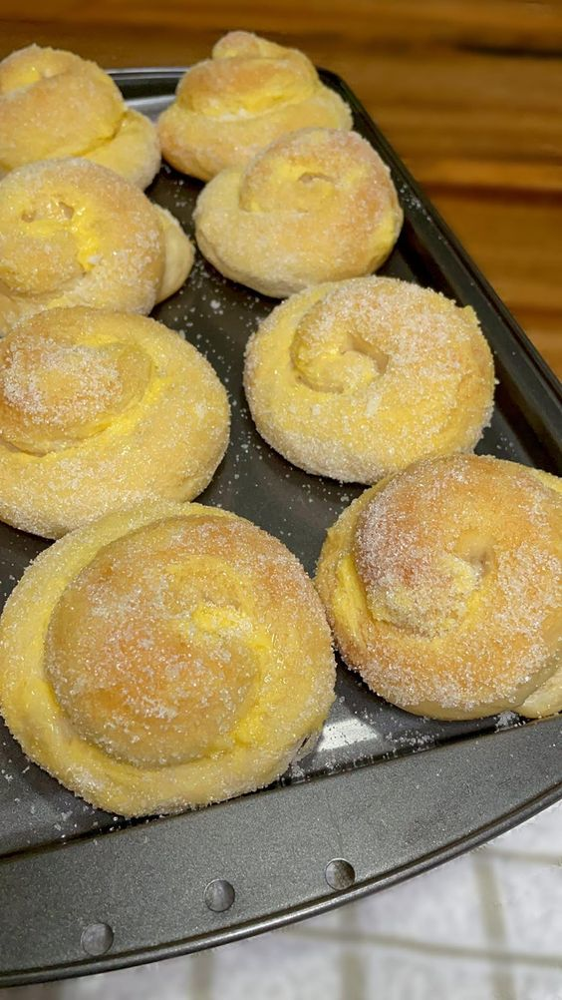
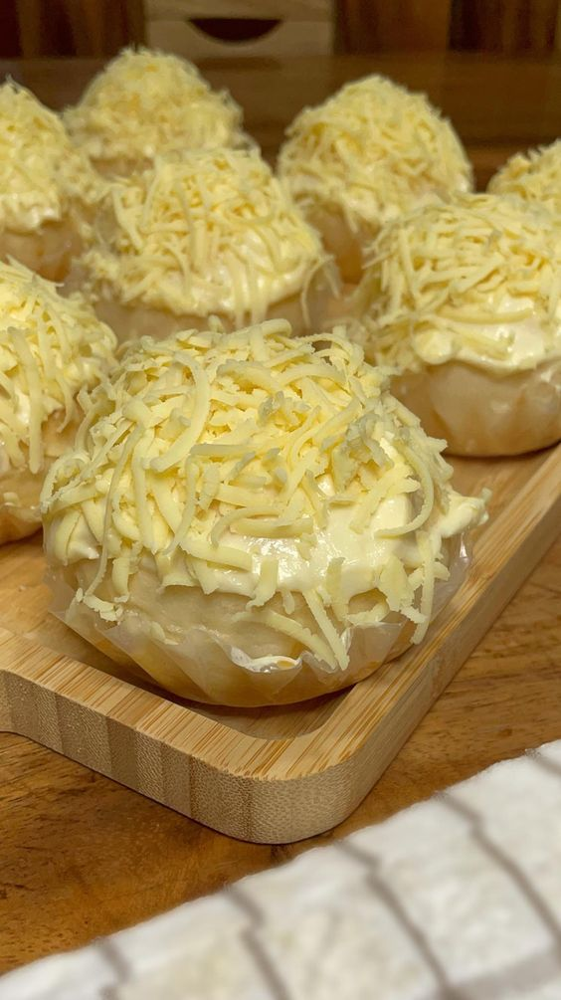

Ang ensaymada ay isang kilalang tinapay sa Pilipinas na karaniwang kinakain bilang meryenda o pang-agahan. Ito
ay isang manipis at malambot na tinapay na mayroong kasamang pampatamis at sa ibabaw nito ay mayroong
mantikilya, asukal, at paminsan-minsang gatas na kondensada. Ang ensaymada ay kilala rin sa kanyang malaking
sukat, hugis rosas na ibinibenta sa mga panaderya, mga coffee shop, at mga tindahan ng kakanin.
Ang kasaysayan ng ensaymada ay may kaugnayan sa impluwensiya ng mga Kastila sa Pilipinas. Ang salitang
"ensaymada" mismo ay nanggaling sa Espanyol na "ensaimada," na nagpapahiwatig ng pagkakaroon ng mantikilya
bilang pangunahing sangkap. Noong panahon ng mga Kastila, ang ensaymada ay kilala bilang isang lutuin na
niluluto gamit ang malagkit na bigas na sinamahan ng mga sangkap na gaya ng mantikilya, asukal, at keso.
Ang paggawa ng ensaymada ay isang masalimuot na proseso. Unang-una, nagluluto ng malambot na masa na binubuo
ng harina, asukal, pampaalsa, yeast, itlog, at tubig. Ito ay iniiwan na may patong-patong sa loob ng ilang
oras upang mapatigas at umalsa. Matapos ito, inuulit na pinapalawak at ginagawa itong manipis na masa. Ito ay
iniikot at binabalot nang maayos, at iniiwan na magpatuloy ang proseso ng pagtaas nito.
Ang ensaymada ay nilalagyan ng mantikilya, asukal, at keso sa ibabaw nito bago ilagay sa hurno. Ito ay
niluluto hanggang maging malutong, kulay ginto, at malapit nang lumutang mula sa maliit na lalagyan. Kapag
malamig na ito, maaaring palamigin at ibalot sa papel na maganda ang presentasyon bago ito ibenta o ihain.
Ang ensaymada ay karaniwang kinakain kasama ng mainit na tsokolate, kape, o iba pang inumin. Ito ay isang
masarap at malinamnam na tinapay na malimit na inihahanda at inoorder sa mga espesyal na okasyon tulad ng mga
kasal, binyag, at pista. Ito ay naging bahagi na rin ng mga tradisyon at kultura ng Pilipinas.
Sa kasalukuyan, ang ensaymada ay patuloy na isang sikat na meryenda sa Pilipinas. Maraming mga lokal na
panaderya at mga establisimyento ang nag-aalok ng iba't ibang mga bersyon nito, tulad ng mga may iba't ibang
flavor tulad ng ube, keso, at ensaymada na may palaman na iba't ibang klaseng sangkap tulad ng hamon, itlog na
maalat, o even chocolate.
Sa huling salita, ang ensaymada ay hindi lamang isang tinapay na masarap, ito ay naglalarawan rin ng
pagkamalikhain at pagmamahal ng mga Pilipino sa pagkain. Ito ay isang katangi-tanging produkto na nagpapakita
ng pagiging mapagpasalamat sa impluwensiya ng mga Kastila at ang patuloy na pag-unlad ng kultura ng pagkain sa
ating bansa.
Ensaymada: Ang Mapusyaw at Malasang Tinapay na Paborito ng mga Pinoy

